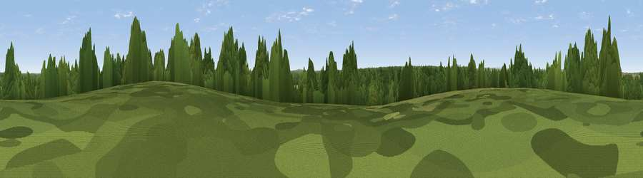

Viewpoint near Worksop
#41751 in England · top 84% of its area beats it · near Worksop · access?Where it is
The exact computed spot (SK 61225 77525). Click the marker for map links.
Public access: no public right of way or access land is recorded at this exact spot — it may be on private land. Computed from Natural England's CRoW access layer and OpenStreetMap rights of way — not the legal definitive map. Always verify locally.
The view, rendered

A 360° render of this exact spot computed from the terrain model, tree cover and land cover — summer colours, afternoon light, calibrated against photographs of famous viewpoints. Real trees, hedges and buildings will differ in detail.
The panorama
Grey silhouette: terrain skyline in each direction (720 bearings, Earth curvature and refraction included). Dashed green: skyline with trees (+15 m) and buildings (+8 m) as obstacles. Blue strip: how far the ground is visible on each bearing.
Where the view opens
Wedge length = distance to the farthest visible ground on that bearing (vegetation-aware). Rings at 10, 25 and 50 km.
What fills the view
44% woodland · 26% grassland · 20% cropland · 10% built-up
Angular shares of the visible panorama (visual magnitude), not map area. Landscape diversity 0.55 (0–1 Shannon).
Key numbers
More beautiful places nearby
The staircase of upgrades: each row has a higher view potential than everything closer. Driving times are estimates from straight-line distance, calibrated against real road routing — check an actual route before setting out.
| Place | Direction | Drive | Score |
|---|---|---|---|
| Viewpoint near Worksop | WSW · 4 km | ~9 min | 42.9 |
| Viewpoint near Meden Vale | SSW · 8 km | ~17 min | 65.2 |
| Burstheart Hill [Thoresby Colliery] | SSE · 10 km | ~19 min | 69.3 |
| Viewpoint near Maltby | NNW · 16 km | ~29 min | 70.7 |
| Viewpoint near Whitley | WNW · 34 km | ~52 min | 72.1 |
| Crich Stand | SW · 35 km | ~53 min | 73.0 |
| Viewpoint near Wharncliffe Side | WNW · 35 km | ~53 min | 75.2 |
| Tissington Hill | WSW · 52 km | ~74 min | 75.5 |
53.29116, -1.08298 · source: screening · position refined by local search. Computed location — check access rights before visiting.